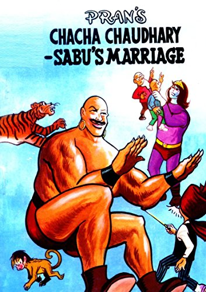
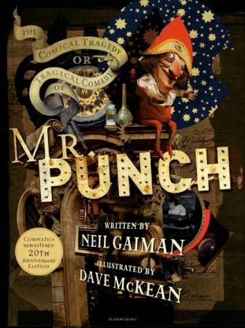

Set in England during the late Victorian era, the play's humour derives in part from characters maintaining fictitious identities to escape unwelcome social obligations. It is replete with witty dialogue and satirises some of the foibles and hypocrisy of late Victorian society. It has proved Wilde's most enduringly popular play. - Wikipedia. Play script, including biographical notes, textual details and information about the staging of the play.

CHACHA CHAUDHARY AND THE WEDDING OF SABU: CHACHA CHAUDHARY
Once cartoonist Pran struck upon an idea of a wise oldman who solves problems with his sharp intellect. Thus CHACHA CHAUDHARY was born in 1971.Tall and robust SABU, who is an inhabitant of planet Jupiter, gave Chaudhary an ideal company. A combination of wisdom and strength was formed to tackle any difficult task. It is said that " Chacha Chaudhary's brain works faster than a computer". Though both fight the criminals and tricksters, each episode ends with a touch of humour. The duo perform in lighter vein.

Tragical Comedy of Mr Punch
A young boy stumbles across a Punch and Judy show at the pier and enters a world of extraordinary magic. With disturbing mysteries and half-truths uncontrollably unravelling, this boy is forced to deal with his family's secrets of violence, betrayal and guilt in this dark fable of childhood and growing up.By the bestselling author and illustrator pairing behind the Sandman series and children's classics, The Graveyard Book and Coraline, The Tragical Comedy or Comical Tragedy of Mr Punch is woven together with Neil Gaiman and Dave McKean's trademark eerie elegance and supernatural thrills. In addition to its new cover, each page of this unmissable 20th anniversary edition has been remastered and a gallery of uncanny, sensational original artwork by Dave McKean has been included for the first time.